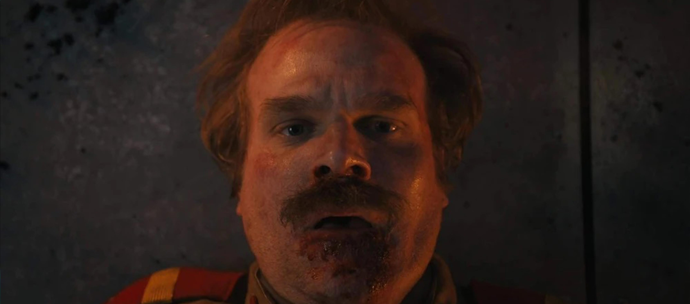

Mientras Hopper lucha por sobrevivir en la gélida prisión de Kamchatka, Hawkins despierta conmocionada por el brutal asesinato de Chrissy. Max oculta un secreto vital, Nancy sigue el rastro de una nueva víctima y Once debe enfrentarse a su pasado.